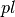
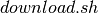

Recurrent Neural Networks with Word Embeddings¶
Summary¶
In this tutorial, you will learn how to:
- learn Word Embeddings
- using Recurrent Neural Networks architectures
- with Context Windows
in order to perform Semantic Parsing / Slot-Filling (Spoken Language Understanding)
Code - Citations - Contact¶
Code¶
Directly running experiments is also possible using this github repository.
Papers¶
If you use this tutorial, cite the following papers:
- [pdf] Grégoire Mesnil, Xiaodong He, Li Deng and Yoshua Bengio. Investigation of Recurrent-Neural-Network Architectures and Learning Methods for Spoken Language Understanding. Interspeech, 2013.
- [pdf] Gokhan Tur, Dilek Hakkani-Tur and Larry Heck. What is left to be understood in ATIS?
- [pdf] Christian Raymond and Giuseppe Riccardi. Generative and discriminative algorithms for spoken language understanding. Interspeech, 2007.
- [pdf] Bastien, Frédéric, Lamblin, Pascal, Pascanu, Razvan, Bergstra, James, Goodfellow, Ian, Bergeron, Arnaud, Bouchard, Nicolas, and Bengio, Yoshua. Theano: new features and speed improvements. NIPS Workshop on Deep Learning and Unsupervised Feature Learning, 2012.
- [pdf] Bergstra, James, Breuleux, Olivier, Bastien, Frédéric, Lamblin, Pascal, Pascanu, Razvan, Desjardins, Guillaume, Turian, Joseph, Warde-Farley, David, and Bengio, Yoshua. Theano: a CPU and GPU math expression compiler. In Proceedings of the Python for Scientific Computing Conference (SciPy), June 2010.
Thank you!
Contact¶
Please email to
Grégoire Mesnil (first-add-a-dot-last-add-at-gmail-add-a-dot-com)
for any problem report or feedback. We will be glad to hear from you.
Task¶
The Slot-Filling (Spoken Language Understanding) consists in assigning a label to each word given a sentence. It’s a classification task.
Dataset¶
An old and small benchmark for this task is the ATIS (Airline Travel Information System) dataset collected by DARPA. Here is a sentence (or utterance) example using the Inside Outside Beginning (IOB) representation.
| Input (words) | show | flights | from | Boston | to | New | York | today |
| Output (labels) | O | O | O | B-dept | O | B-arr | I-arr | B-date |
The ATIS offical split contains 4,978/893 sentences for a total of 56,590/9,198 words (average sentence length is 15) in the train/test set. The number of classes (different slots) is 128 including the O label (NULL).
As Microsoft Research people,
we deal with unseen words in the test set by marking any words with only one
single occurrence in the training set as <UNK> and use this token to
represent those unseen words in the test set. As Ronan Collobert and colleagues, we converted
sequences of numbers with the string DIGIT i.e. 1984 is converted to
DIGITDIGITDIGITDIGIT.
We split the official train set into a training and validation set that contain respectively 80% and 20% of the official training sentences. Significant performance improvement difference has to be greater than 0.6% in F1 measure at the 95% level due to the small size of the dataset. For evaluation purpose, experiments have to report the following metrics:
We will use the conlleval PERL script to measure the performance of our models.
Recurrent Neural Network Model¶
Raw input encoding¶
A token corresponds to a word. Each token in the ATIS vocabulary is associated to an index. Each sentence is a
array of indexes (int32). Then, each set (train, valid, test) is a list of arrays of indexes. A python
dictionary is defined for mapping the space of indexes to the space of words.
>>> sentence
array([383, 189, 13, 193, 208, 307, 195, 502, 260, 539,
7, 60, 72, 8, 350, 384], dtype=int32)
>>> map(lambda x: index2word[x], sentence)
['please', 'find', 'a', 'flight', 'from', 'miami', 'florida',
'to', 'las', 'vegas', '<UNK>', 'arriving', 'before', 'DIGIT', "o'clock", 'pm']
Same thing for labels corresponding to this particular sentence.
>>> labels
array([126, 126, 126, 126, 126, 48, 50, 126, 78, 123, 81, 126, 15,
14, 89, 89], dtype=int32)
>>> map(lambda x: index2label[x], labels)
['O', 'O', 'O', 'O', 'O', 'B-fromloc.city_name', 'B-fromloc.state_name',
'O', 'B-toloc.city_name', 'I-toloc.city_name', 'B-toloc.state_name',
'O', 'B-arrive_time.time_relative', 'B-arrive_time.time',
'I-arrive_time.time', 'I-arrive_time.time']
Context window¶
Given a sentence i.e. an array of indexes, and a window size i.e. 1,3,5,..., we need to convert each word in the sentence to a context window surrounding this particular word. In details, we have:
The index -1 corresponds to the PADDING index we insert at the
beginning/end of the sentence.
Here is a sample:
>>> x
array([0, 1, 2, 3, 4], dtype=int32)
>>> contextwin(x, 3)
[[-1, 0, 1],
[ 0, 1, 2],
[ 1, 2, 3],
[ 2, 3, 4],
[ 3, 4,-1]]
>>> contextwin(x, 7)
[[-1, -1, -1, 0, 1, 2, 3],
[-1, -1, 0, 1, 2, 3, 4],
[-1, 0, 1, 2, 3, 4,-1],
[ 0, 1, 2, 3, 4,-1,-1],
[ 1, 2, 3, 4,-1,-1,-1]]
To summarize, we started with an array of indexes and ended with a matrix of indexes. Each line corresponds to the context window surrounding this word.
Word embeddings¶
Once we have the sentence converted to context windows i.e. a matrix of indexes, we have to associate these indexes to the embeddings (real-valued vector associated to each word). Using Theano, it gives:
import theano, numpy
from theano import tensor as T
# nv :: size of our vocabulary
# de :: dimension of the embedding space
# cs :: context window size
nv, de, cs = 1000, 50, 5
embeddings = theano.shared(0.2 * numpy.random.uniform(-1.0, 1.0, \
(nv+1, de)).astype(theano.config.floatX)) # add one for PADDING at the end
idxs = T.imatrix() # as many columns as words in the context window and as many lines as words in the sentence
x = self.emb[idxs].reshape((idxs.shape[0], de*cs))
The x symbolic variable corresponds to a matrix of shape (number of words in the sentences, dimension of the embedding space X context window size).
Let’s compile a theano function to do so
>>> sample
array([0, 1, 2, 3, 4], dtype=int32)
>>> csample = contextwin(sample, 7)
[[-1, -1, -1, 0, 1, 2, 3],
[-1, -1, 0, 1, 2, 3, 4],
[-1, 0, 1, 2, 3, 4,-1],
[ 0, 1, 2, 3, 4,-1,-1],
[ 1, 2, 3, 4,-1,-1,-1]]
>>> f = theano.function(inputs=[idxs], outputs=x)
>>> f(csample)
array([[-0.08088442, 0.08458307, 0.05064092, ..., 0.06876887,
-0.06648078, -0.15192257],
[-0.08088442, 0.08458307, 0.05064092, ..., 0.11192625,
0.08745284, 0.04381778],
[-0.08088442, 0.08458307, 0.05064092, ..., -0.00937143,
0.10804889, 0.1247109 ],
[ 0.11038255, -0.10563177, -0.18760249, ..., -0.00937143,
0.10804889, 0.1247109 ],
[ 0.18738101, 0.14727569, -0.069544 , ..., -0.00937143,
0.10804889, 0.1247109 ]], dtype=float32)
>>> f(csample).shape
(5, 350)
We now have a sequence (of length 5 which is corresponds to the length of the sentence) of context window word embeddings which is easy to feed to a simple recurrent neural network to iterate with.
Elman recurrent neural network¶
The followin (Elman) recurrent neural network (E-RNN) takes as input the current input
(time t) and the previous hiddent state (time t-1). Then it iterates.
In the previous section, we processed the input to fit this
sequential/temporal structure. It consists in a matrix where the row 0 corresponds to
the time step t=0, the row 1 corresponds to the time step t=1, etc.
The parameters of the E-RNN to be learned are:
- the word embeddings (real-valued matrix)
- the initial hidden state (real-value vector)
- two matrices for the linear projection of the input
tand the previous hidden layer statet-1 - (optional) bias. Recommendation: don’t use it.
- softmax classification layer on top
The hyperparameters define the whole architecture:
- dimension of the word embedding
- size of the vocabulary
- number of hidden units
- number of classes
- random seed + way to initialize the model
It gives the following code:
Then we integrate the way to build the input from the embedding matrix:
We use the scan operator to construct the recursion, works like a charm:
Theano will then compute all the gradients automatically to maximize the log-likelihood:
Next compile those functions:
We keep the word embeddings on the unit sphere by normalizing them after each update:
And that’s it!
Evaluation¶
With the previous defined functions, you can compare the predicted labels with the true labels and compute some metrics. In this repo, we build a wrapper around the conlleval PERL script. It’s not trivial to compute those metrics due to the Inside Outside Beginning (IOB) representation i.e. a prediction is considered correct if the word-beginning and the word-inside and the word-outside predictions are all correct. Note that the extension is and you will have to change it to .
Training¶
Updates¶
For stochastic gradient descent (SGD) update, we consider the whole sentence as a mini-batch and perform one update per sentence. It is possible to perform a pure SGD (contrary to mini-batch) where the update is done on only one single word at a time.
After each iteration/update, we normalize the word embeddings to keep them on a unit sphere.
Stopping Criterion¶
Early-stopping on a validation set is our regularization technique: the training is run for a given number of epochs (a single pass through the whole dataset) and keep the best model along with respect to the F1 score computed on the validation set after each epoch.
Hyper-Parameter Selection¶
Although there is interesting research/code on the topic of automatic hyper-parameter selection, we use the KISS random search.
The following intervals can give you some starting point:
- learning rate : uniform([0.05,0.01])
- window size : random value from {3,...,19}
- number of hidden units : random value from {100,200}
- embedding dimension : random value from {50,100}
Running the Code¶
After downloading the data using , the user can then run the code by calling:
python code/rnnslu.py
('NEW BEST: epoch', 25, 'valid F1', 96.84, 'best test F1', 93.79)
[learning] epoch 26 >> 100.00% completed in 28.76 (sec) <<
[learning] epoch 27 >> 100.00% completed in 28.76 (sec) <<
...
('BEST RESULT: epoch', 57, 'valid F1', 97.23, 'best test F1', 94.2, 'with the model', 'rnnslu')
Timing¶
Running experiments on ATIS using this repository will run one epoch in less than 40 seconds on i7 CPU 950 @ 3.07GHz using less than 200 Mo of RAM:
[learning] epoch 0 >> 100.00% completed in 34.48 (sec) <<
After a few epochs, you obtain decent performance 94.48 % of F1 score.:
NEW BEST: epoch 28 valid F1 96.61 best test F1 94.19
NEW BEST: epoch 29 valid F1 96.63 best test F1 94.42
[learning] epoch 30 >> 100.00% completed in 35.04 (sec) <<
[learning] epoch 31 >> 100.00% completed in 34.80 (sec) <<
[...]
NEW BEST: epoch 40 valid F1 97.25 best test F1 94.34
[learning] epoch 41 >> 100.00% completed in 35.18 (sec) <<
NEW BEST: epoch 42 valid F1 97.33 best test F1 94.48
[learning] epoch 43 >> 100.00% completed in 35.39 (sec) <<
[learning] epoch 44 >> 100.00% completed in 35.31 (sec) <<
[...]
Word Embedding Nearest Neighbors¶
We can check the k-nearest neighbors of the learned embeddings. L2 and cosine distance gave the same results so we plot them for the cosine distance.
| atlanta | back | ap80 | but | aircraft | business | a | august | actually | cheap |
|---|---|---|---|---|---|---|---|---|---|
| phoenix | live | ap57 | if | plane | coach | people | september | provide | weekday |
| denver | lives | ap | up | service | first | do | january | prices | weekdays |
| tacoma | both | connections | a | airplane | fourth | but | june | stop | am |
| columbus | how | tomorrow | now | seating | thrift | numbers | december | number | early |
| seattle | me | before | amount | stand | tenth | abbreviation | november | flight | sfo |
| minneapolis | out | earliest | more | that | second | if | april | there | milwaukee |
| pittsburgh | other | connect | abbreviation | on | fifth | up | july | serving | jfk |
| ontario | plane | thrift | restrictions | turboprop | third | serve | jfk | thank | shortest |
| montreal | service | coach | mean | mean | twelfth | database | october | ticket | bwi |
| philadelphia | fare | today | interested | amount | sixth | passengers | may | are | lastest |
As you can judge, the limited size of the vocabulary (about 500 words) gives us mitigated performance. According to human judgement: some are good, some are bad.